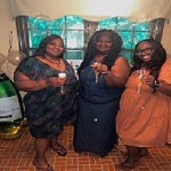

🌷 Sha'maria Young 🌷
Things About Me
Hello, my name is Sha'maria Young, and I am from Greenville South Carolina. I am currently a senior at the University of South Carolina in Columbia, were I am a psychology major. I am currently excited about preparing for graduation on May 6th and getting invitations together. Here to the left is a picture of my sister, my mom, and me....
My name is Sha'Maria Young although people tend to mispronounce my name, because they usually think the apostrophe does something special, I promise it doesn't. Truth be told when I asked my mom about it, she straight up told me my name was between Kim and Shamari but because her and my disagreed on my name. My dad flipped a coin, and my name was Shamari for about twenty minutes until the nurse came in and said I was a cute baby and for her to add an "a" on the end. I am the type of person who will have a birthday party and run around to make sure everyone has eaten, good on refills and is having a good time even if I am not. Don't get me wrong I am not a people pleaser, but I do want to make sure everyone is having good time because you never know what someone is going through. To be completely, I don't know who I am. I don't think any of us at my age can fully know ourselves. I know I like hard hitting drama tv shows, and most of my financial woes can be traced back to my caffeine addiction, and that I'm very afraid of the violence plaguing our planet, and I'm still a dork for cheesy romance movies where the guy chases the girl to the airport.
Plans For The Future
My future plans after graduation are to take a year off and work on saving my money and then enroll in a dual enrollment for my master and Ph.D. in neural psychology counseling. I plan to practice researching in a neural lab to look at neural intellectual diseases and to slow or reverse them from happening during early prenatal stages. I also plan to research depression of effects of those in the African American community. ...
Growing up in a single parent household I quickly learned it takes a village to raise a child. My mother was my sole parental guardian and for her I am very grateful for the opportunities which I have been blessed with. My mother has taught me you have to work hard for anything you want out of life because no one is going to hand you anything. With it has encouraged me to want to work youth in low-income areas so they can receive effective counseling. After a while I want to work more so on the neural development of children to be able to properly understand them and be able to help them in way which works for the both of us. I want to work with children ages 7 to 17 years in my child psychology career and this summer I want to challenge myself to explore new activities. Besides the already perfect career and summer outdoor experience, I would also get to live in another state, and have that new life experience.